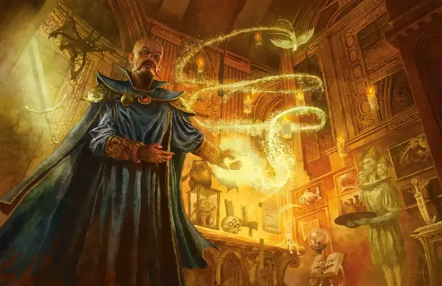

Великолепный особняк Морденкайнена
Mordenkainen's Magnificent Mansion
7 уровень, Вызов

Время сотворения 1 минута
Дистанция 300 футов
Компоненты В, С, М (миниатюрная дверь из слоновой кости, кусочек полированного мрамора и крошечная серебряная ложка, каждый предмет должен стоить как минимум 5 зм)
Длительность 24 часа
Классы Бард, Волшебник
Вы создаёте межпространственное жилище в пределах дистанции, существующее, пока заклинание активно. Вы выбираете, где будет находиться единственный вход. Вход слабо светится; он 5 футов в ширину и 10 футов в высоту. Вы и все существа, указанные вами при накладывании заклинания, можете входить в это жилище, пока дверь открыта. Вы можете открывать и закрывать дверь, если находитесь в пределах 30 футов от неё. Дверь невидима, когда закрыта.
За дверью находится великолепная прихожая с многочисленными комнатами. Там свежий и тёплый воздух.
Вы можете создать любую планировку, но пространство не может превышать 50 кубов с длиной ребра в 10 футов. Это место украшено и обставлено мебелью так, как вы пожелаете. Там достаточно еды для 100 человек с девятью переменами блюд. Вошедшим прислуживают 100 практически прозрачных слуг. Внешний облик и одежду этих слуг определяете вы. Они послушно исполняют все приказы. Каждый слуга может исполнять задачи, которые доступны любому человеческому слуге, но они не могут атаковать и совершать действия, причиняющие вред другому существу. Таким образом, слуги могут подавать вещи, чистить, штопать, гладить одежду, зажигать огни, подавать пищу, наливать вино и так далее. Слуги могут перемещаться по особняку, но не могут выходить из него. Мебель и другие предметы, созданные этим заклинанием, превращаются в дым, если их вынесут из особняка. Когда заклинание заканчивается, все существа и оставленные объекты, находящиеся в межпространстве, изгоняются в свободное пространство, ближайшее к входу.